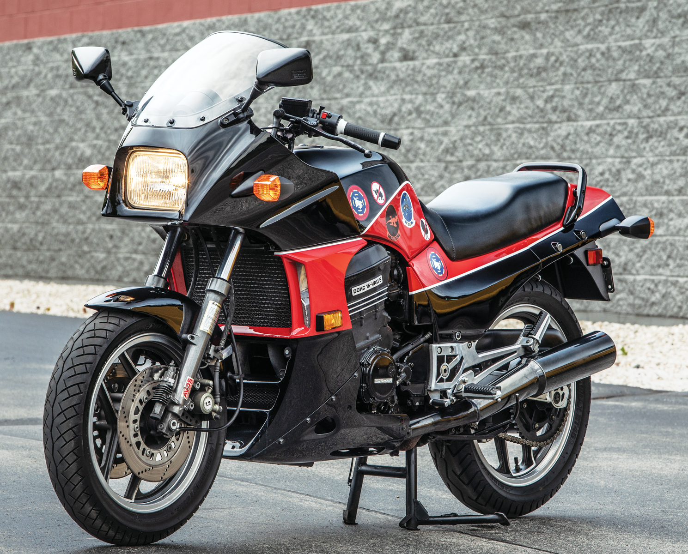
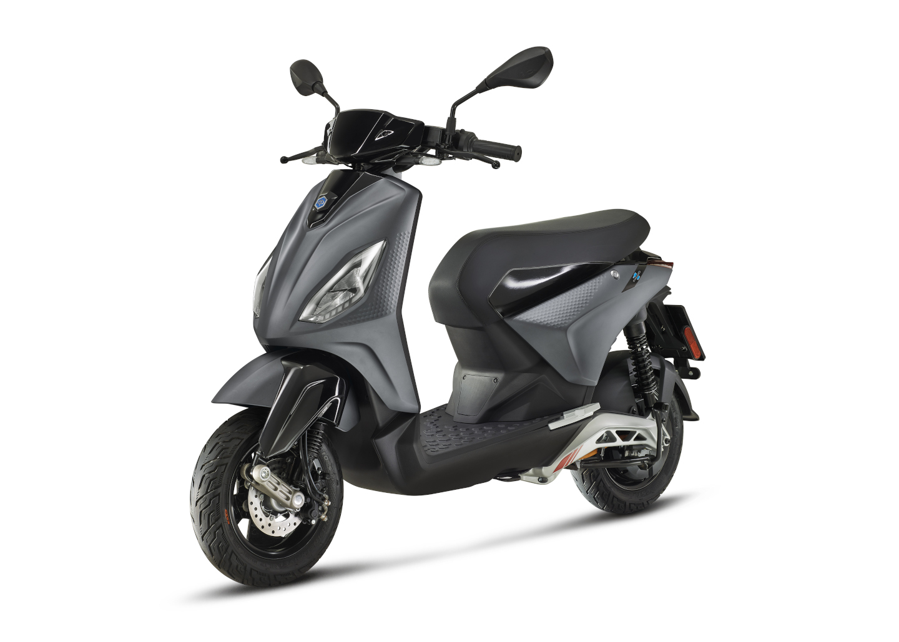
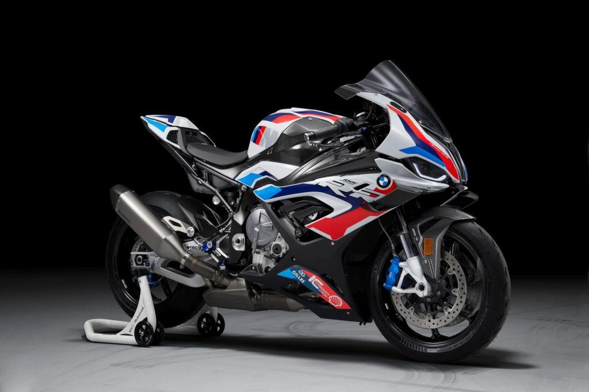
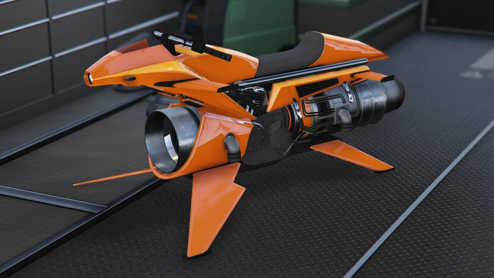
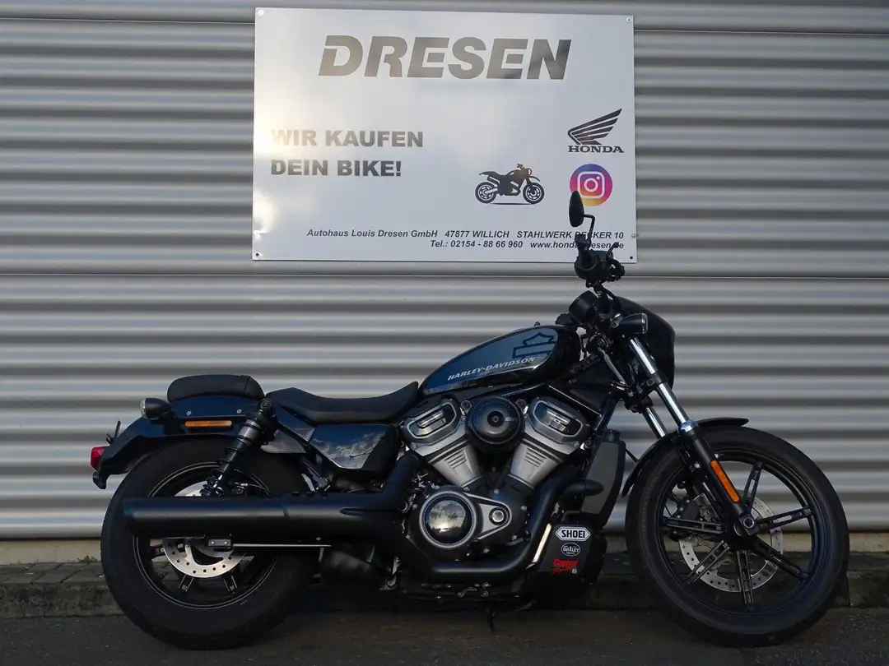
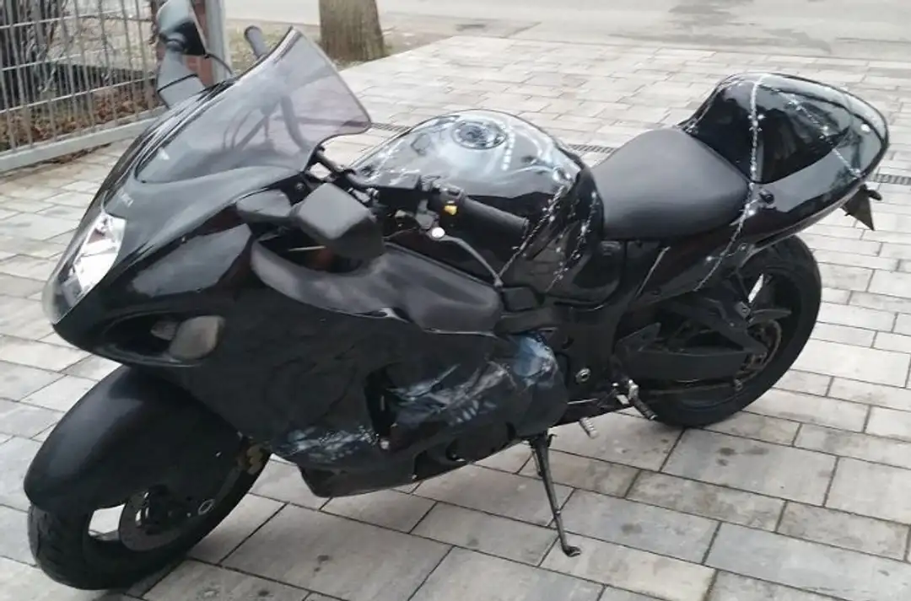

×
Kezdőlap
Autók
Motorok
Elérhetőségek
Szerződési feltételek
☰

Kawasaki GPZ 900 R
Kilóméter óra:
47 500km
Üzemanyag: benzin
Teljesítmény: 85kW (116 LE)
Első forgalomba helyezés: 08/1984
ára: 2 600€
Vásárlás

Piaggio 1 Active
Kilóméter óra:
000km
Üzemanyag: benzin
Teljesítmény: 3kW (4 LE)
Első forgalomba helyezés: ---
ára: 1 000€
Vásárlás

BMW S 1000 RR
Kilóméter óra:
13 003km
Üzemanyag: benzin
Teljesítmény: 152kW (207 LE)
Első forgalomba helyezés: 03/2020
ára: 19 989€
Vásárlás
Ducati Cucciolo
Kilóméter óra:
2 000km
Üzemanyag: benzin
Teljesítmény: 2kW (3 LE)
Első forgalomba helyezés: 02/1950
ára: 3 956 000€
Vásárlás

Opressor Mk II
Kilóméter óra:
1 628 192km
Üzemanyag: kerozin
Teljesítmény: 1 500kW (2 011 LE)
Első forgalomba helyezés: 12/2035
ára: 8 000 000€
Vásárlás

Harley-Davidson Nightster 975 ABS
Kilóméter óra:
1 200km
Üzemanyag: benzin
Teljesítmény: 66kW (90 LE)
Első forgalomba helyezés: 08/2023
ára: 12 490€
Vásárlás

Suzuki Hayabusa GSX-R 1300
Kilóméter óra:
25 600km
Üzemanyag: benzin
Teljesítmény: 129kW (175 LE)
Első forgalomba helyezés: 08/2003
ára: 4 700€
Vásárlás
KTM 1290 Super Duke R
Kilóméter óra:
34 500km
Üzemanyag: benzin
Teljesítmény: 139kW (189 LE)
Első forgalomba helyezés: 03/2015
ára: 8 200€
Vásárlás
Ducati Monster 600
Kilóméter óra:
60 420km
Üzemanyag: benzin
Teljesítmény: 40kW (54 LE)
Első forgalomba helyezés: 05/2000
ára: 1 900€
Vásárlás
↑